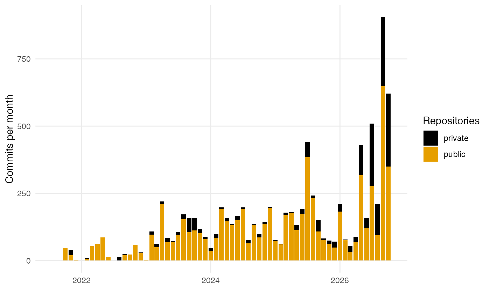
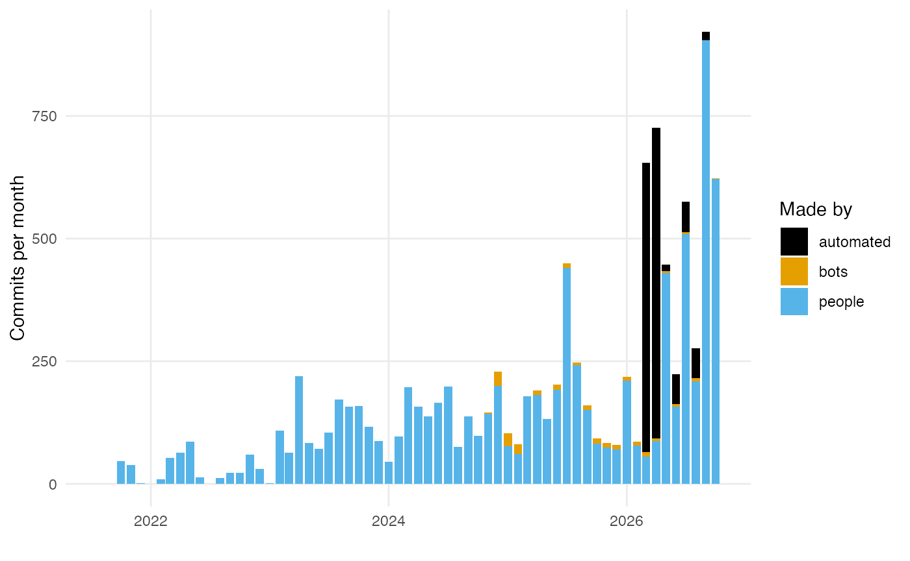
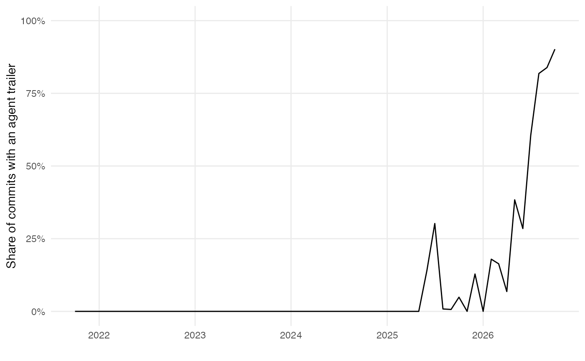
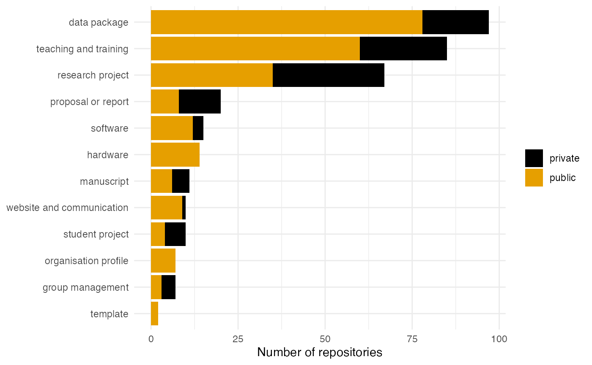
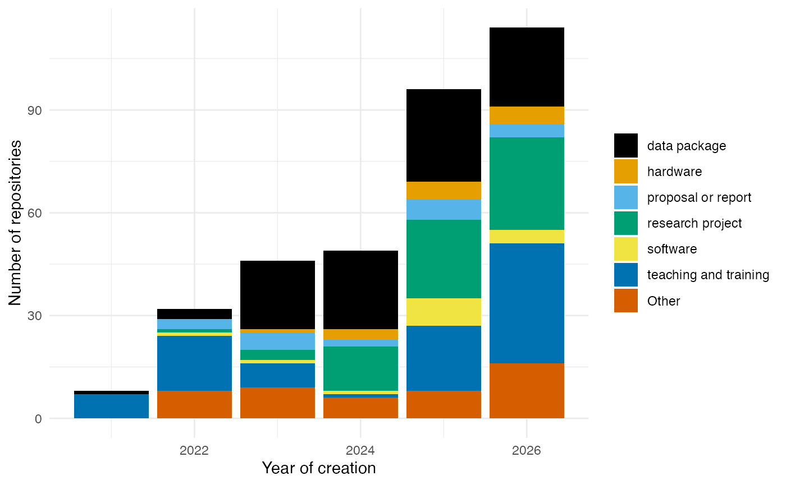
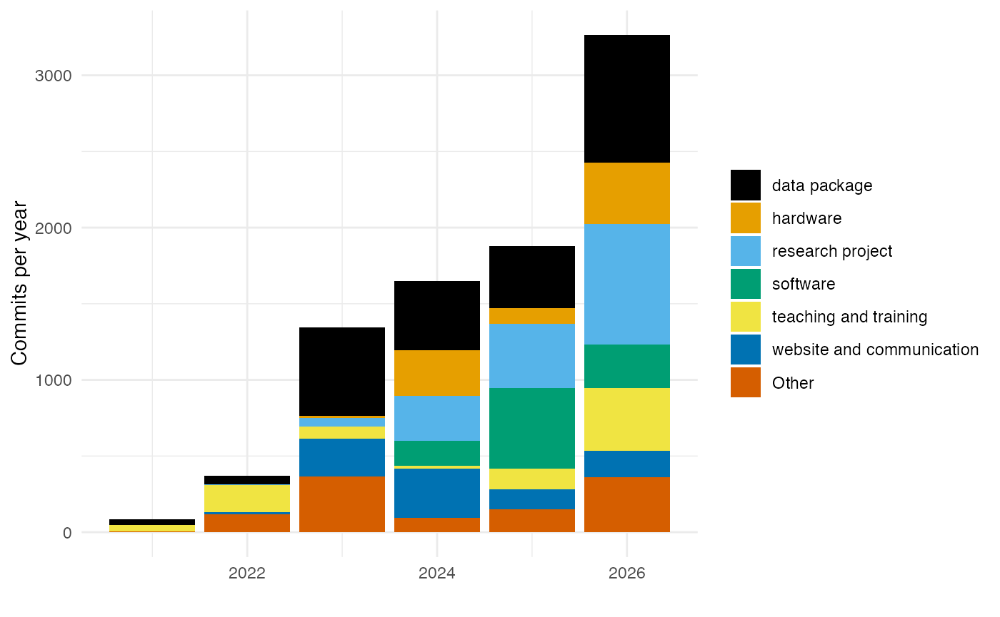

This article describes the five GitHub tables of the package and shows how the comparison of commits over two years is computed.
Organisations
snapshot_date <- unique(github_organisations$snapshot_date)
counted <- github_organisations |>
filter(commits_counted)The data was read from GitHub on 2026-11-11. Commits are counted in 7 organisations with 394 repositories, of which 250 are public and 144 are private. Teaching organisations hold one repository per student. They appear in the table with their number of repositories, and their commits are not counted.
github_organisations |>
select(organisation, purpose, commits_counted, repos_public, repos_private) |>
knitr::kable()| organisation | purpose | commits_counted | repos_public | repos_private |
|---|---|---|---|---|
| Global-Health-Engineering | research | TRUE | 84 | 53 |
| openwashdata | data publishing | TRUE | 86 | 19 |
| openwashdata-dev | development | TRUE | 10 | 11 |
| openwashdata-conf | events | TRUE | 10 | 11 |
| ghe-learn | training | TRUE | 35 | 7 |
| agentsforsci-ghe | training | TRUE | 9 | 23 |
| gitforsci-ghe | training | TRUE | 16 | 20 |
| ds4owd-001 | teaching | FALSE | 833 | 285 |
| ds4owd-002 | teaching | FALSE | 233 | 934 |
| rbtl-fs22 | teaching | FALSE | 7 | 163 |
| rbtl-fs24 | teaching | FALSE | 108 | 35 |
| rbtl-fs25 | teaching | FALSE | 115 | 34 |
Commits per month
The table github_commits has one row per organisation,
visibility and month. The column commits counts the commits
that people made on the default branch of each repository. Three kinds
of commits have their own columns and are not part of
commits: commits by bots and GitHub Actions
(commits_bot), automated pushes
(commits_automated) and merge commits
(commits_merge). An automated push is a commit that a
device or a script makes under the account of a person, for example a
sensor that uploads its readings every hour. They are recognised by the
first line of the message, with the patterns in
data-raw/github_automated_commits.csv. Private repositories
are counted and never named.
github_commits |>
summarise(commits = sum(commits), .by = c(month, visibility)) |>
ggplot(aes(x = month, y = commits, fill = visibility)) +
geom_col() +
labs(x = "", y = "Commits per month", fill = "Repositories") +
scale_fill_colorblind() +
theme_minimal() +
theme(panel.grid.minor = element_blank())
github_commits |>
summarise(
people = sum(commits),
bots = sum(commits_bot),
automated = sum(commits_automated),
.by = month
) |>
tidyr::pivot_longer(-month, names_to = "made_by", values_to = "commits") |>
ggplot(aes(x = month, y = commits, fill = made_by)) +
geom_col() +
labs(x = "", y = "Commits per month", fill = "Made by") +
scale_fill_colorblind() +
theme_minimal() +
theme(panel.grid.minor = element_blank())
The last 12 months against the 12 months before
github_commit_change() sums the commits of the last 12
complete months in the data and of the 12 months before, and divides the
first number by the second.
All organisations, public and private repositories:
github_commit_change() |>
knitr::kable(digits = 1)| organisation | visibility | current_start | current_end | previous_start | previous_end | commits_current | commits_previous | factor |
|---|---|---|---|---|---|---|---|---|
| all | all | 2025-11-01 | 2026-10-01 | 2024-11-01 | 2025-10-01 | 3407 | 2079 | 1.6 |
Public repositories and private repositories of all organisations:
bind_rows(
github_commit_change(visibility = "public"),
github_commit_change(visibility = "private")
) |>
knitr::kable(digits = 1)| organisation | visibility | current_start | current_end | previous_start | previous_end | commits_current | commits_previous | factor |
|---|---|---|---|---|---|---|---|---|
| all | public | 2025-11-01 | 2026-10-01 | 2024-11-01 | 2025-10-01 | 2274 | 1896 | 1.2 |
| all | private | 2025-11-01 | 2026-10-01 | 2024-11-01 | 2025-10-01 | 1133 | 183 | 6.2 |
Private repositories of the Global Health Engineering organisation:
github_commit_change(
organisation = "Global-Health-Engineering",
visibility = "private"
) |>
knitr::kable(digits = 1)| organisation | visibility | current_start | current_end | previous_start | previous_end | commits_current | commits_previous | factor |
|---|---|---|---|---|---|---|---|---|
| Global-Health-Engineering | private | 2025-11-01 | 2026-10-01 | 2024-11-01 | 2025-10-01 | 823 | 71 | 11.6 |
Per organisation:
unique(github_commits$organisation) |>
lapply(github_commit_change) |>
bind_rows() |>
knitr::kable(digits = 1)| organisation | visibility | current_start | current_end | previous_start | previous_end | commits_current | commits_previous | factor |
|---|---|---|---|---|---|---|---|---|
| Global-Health-Engineering | all | 2025-11-01 | 2026-10-01 | 2024-11-01 | 2025-10-01 | 1792 | 1166 | 1.5 |
| openwashdata | all | 2025-11-01 | 2026-10-01 | 2024-11-01 | 2025-10-01 | 1101 | 747 | 1.5 |
| openwashdata-dev | all | 2025-11-01 | 2026-10-01 | 2024-11-01 | 2025-10-01 | 83 | 33 | 2.5 |
| openwashdata-conf | all | 2025-11-01 | 2026-10-01 | 2024-11-01 | 2025-10-01 | 0 | 132 | 0.0 |
| ghe-learn | all | 2025-11-01 | 2026-10-01 | 2024-11-01 | 2025-10-01 | 0 | 1 | 0.0 |
| agentsforsci-ghe | all | 2025-11-01 | 2026-10-01 | 2024-11-01 | 2025-10-01 | 264 | 0 | NA |
| gitforsci-ghe | all | 2025-11-01 | 2026-10-01 | 2024-11-01 | 2025-10-01 | 167 | 0 | NA |
Commits with a coding agent
The column commits_assisted counts commits whose message
names a coding agent in a trailer. The trailer is optional, so the
number is a lower bound.
github_commits |>
summarise(
commits = sum(commits),
commits_assisted = sum(commits_assisted),
.by = month
) |>
filter(commits > 0) |>
ggplot(aes(x = month, y = commits_assisted / commits)) +
geom_line() +
scale_y_continuous(labels = scales::label_percent(), limits = c(0, 1)) +
labs(x = "", y = "Share of commits with an agent trailer") +
theme_minimal() +
theme(panel.grid.minor = element_blank())
Repositories by type
The table github_repository_types counts all
repositories by type, the private ones and student work included, and
names none. The type comes from rules on the name, the top level files,
the topics, the main language and the purpose of the organisation. The
rules are rough: a thesis project that is named after its topic counts
as a research project or as hardware.
Most repositories belong to learners in courses and workshops, with one repository per learner and exercise.
github_repository_types |>
mutate(group = if_else(
repository_type == "learner repository",
"learner repositories",
"all other repositories"
)) |>
count(group, wt = repos, name = "repos") |>
knitr::kable()| group | repos |
|---|---|
| all other repositories | 345 |
| learner repositories | 2796 |
The other repositories by type:
types <- github_repository_types |>
filter(repository_type != "learner repository") |>
count(repository_type, visibility, wt = repos, name = "repos")
ggplot(types, aes(x = repos, y = reorder(repository_type, repos, sum), fill = visibility)) +
geom_col() +
scale_fill_colorblind() +
labs(x = "Number of repositories", y = NULL, fill = NULL) +
theme_minimal()
The same repositories by year of creation:
github_repository_types |>
filter(repository_type != "learner repository") |>
mutate(repository_type = forcats::fct_lump_n(repository_type, 6, w = repos)) |>
count(created_year, repository_type, wt = repos, name = "repos") |>
ggplot(aes(x = created_year, y = repos, fill = repository_type)) +
geom_col() +
scale_fill_colorblind() +
labs(x = "Year of creation", y = "Number of repositories", fill = NULL) +
theme_minimal()
Commits by repository type
The table github_commits_by_type holds the commits of
github_commits split by the type of the repository. It has
a row for every month in which the repositories of a type had at least
one commit. Commits in the teaching organisations are not counted, so
the only learner repositories in it are the few that sit in the other
organisations.
github_commits_by_type |>
mutate(
year = as.integer(format(month, "%Y")),
repository_type = forcats::fct_lump_n(repository_type, 6, w = commits)
) |>
count(year, repository_type, wt = commits, name = "commits") |>
ggplot(aes(x = year, y = commits, fill = repository_type)) +
geom_col() +
scale_fill_colorblind() +
labs(x = "", y = "Commits per year", fill = NULL) +
theme_minimal()
The last 12 complete months against the 12 months before, by type:
windows <- seq(max(github_commits_by_type$month), by = "-1 month", length.out = 24)
current <- windows[1:12]
previous <- windows[13:24]
github_commits_by_type |>
mutate(window = case_when(
month %in% current ~ "commits_current",
month %in% previous ~ "commits_previous"
)) |>
filter(!is.na(window)) |>
count(repository_type, window, wt = commits) |>
tidyr::pivot_wider(names_from = window, values_from = n, values_fill = 0) |>
mutate(factor = if_else(commits_previous > 0, commits_current / commits_previous, NA_real_)) |>
arrange(desc(commits_current)) |>
select(repository_type, commits_previous, commits_current, factor) |>
knitr::kable(digits = 1)| repository_type | commits_previous | commits_current | factor |
|---|---|---|---|
| data package | 404 | 870 | 2.2 |
| research project | 589 | 839 | 1.4 |
| teaching and training | 140 | 415 | 3.0 |
| hardware | 105 | 403 | 3.8 |
| software | 559 | 296 | 0.5 |
| student project | 11 | 210 | 19.1 |
| website and communication | 181 | 171 | 0.9 |
| proposal or report | 43 | 84 | 2.0 |
| learner repository | 0 | 64 | NA |
| template | 5 | 16 | 3.2 |
| group management | 22 | 15 | 0.7 |
| manuscript | 9 | 14 | 1.6 |
| organisation profile | 11 | 10 | 0.9 |
The share of commits with an agent trailer in the last 12 months, by type:
github_commits_by_type |>
filter(month %in% current) |>
summarise(
commits = sum(commits),
commits_assisted = sum(commits_assisted),
.by = repository_type
) |>
mutate(share_assisted = commits_assisted / commits) |>
arrange(desc(commits)) |>
knitr::kable(digits = 2)| repository_type | commits | commits_assisted | share_assisted |
|---|---|---|---|
| data package | 870 | 629 | 0.72 |
| research project | 839 | 488 | 0.58 |
| teaching and training | 415 | 274 | 0.66 |
| hardware | 403 | 187 | 0.46 |
| software | 296 | 248 | 0.84 |
| student project | 210 | 0 | 0.00 |
| website and communication | 171 | 128 | 0.75 |
| proposal or report | 84 | 60 | 0.71 |
| learner repository | 64 | 0 | 0.00 |
| template | 16 | 14 | 0.88 |
| group management | 15 | 7 | 0.47 |
| manuscript | 14 | 5 | 0.36 |
| organisation profile | 10 | 6 | 0.60 |
Public repositories
The table github_repositories lists the public
repositories. Repositories whose name contains the user name of a person
and repositories of student work are left out.
| organisation | repository_type | n |
|---|---|---|
| Global-Health-Engineering | data package | 8 |
| Global-Health-Engineering | group management | 3 |
| Global-Health-Engineering | hardware | 14 |
| Global-Health-Engineering | manuscript | 6 |
| Global-Health-Engineering | organisation profile | 1 |
| Global-Health-Engineering | proposal or report | 4 |
| Global-Health-Engineering | research project | 30 |
| Global-Health-Engineering | software | 5 |
| Global-Health-Engineering | student project | 2 |
| Global-Health-Engineering | teaching and training | 4 |
| Global-Health-Engineering | template | 1 |
| Global-Health-Engineering | website and communication | 4 |
| agentsforsci-ghe | data package | 1 |
| agentsforsci-ghe | organisation profile | 1 |
| agentsforsci-ghe | teaching and training | 6 |
| gitforsci-ghe | organisation profile | 1 |
| gitforsci-ghe | teaching and training | 15 |
| openwashdata | data package | 69 |
| openwashdata | organisation profile | 1 |
| openwashdata | research project | 4 |
| openwashdata | software | 5 |
| openwashdata | teaching and training | 1 |
| openwashdata | template | 1 |
| openwashdata | website and communication | 5 |
| openwashdata-conf | organisation profile | 1 |
| openwashdata-conf | teaching and training | 9 |
| openwashdata-dev | organisation profile | 1 |
| openwashdata-dev | proposal or report | 4 |
| openwashdata-dev | research project | 1 |
| openwashdata-dev | software | 2 |
| openwashdata-dev | teaching and training | 2 |